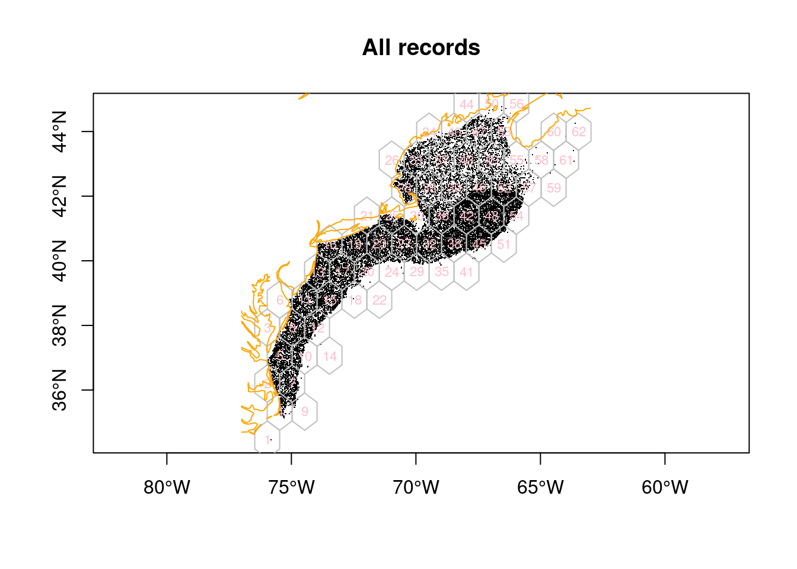
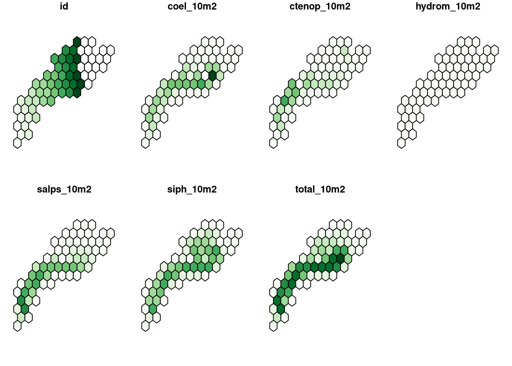
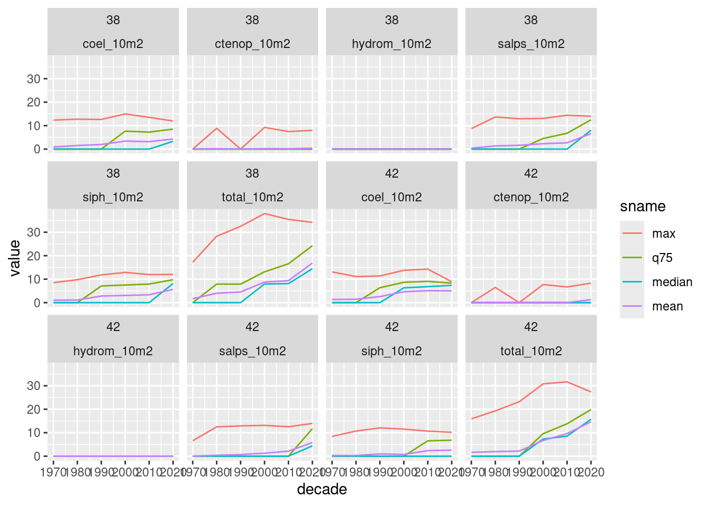
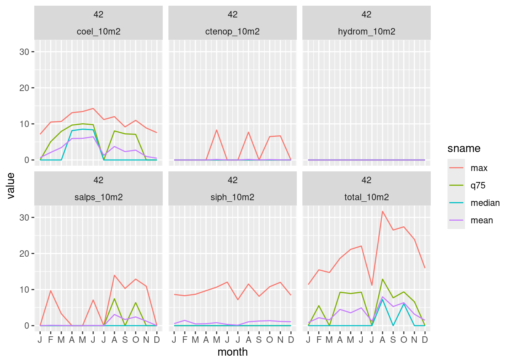
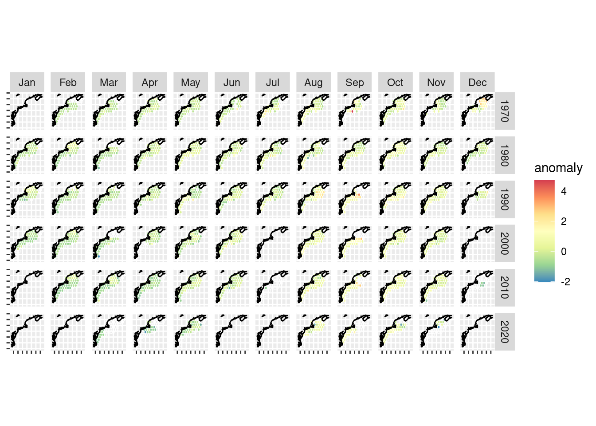
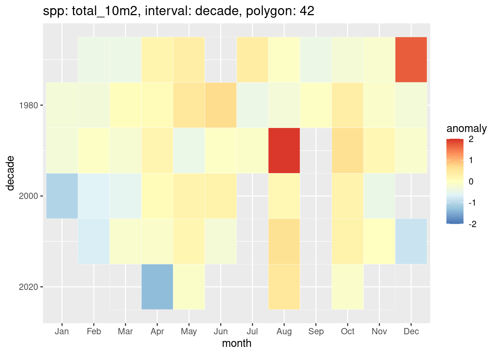
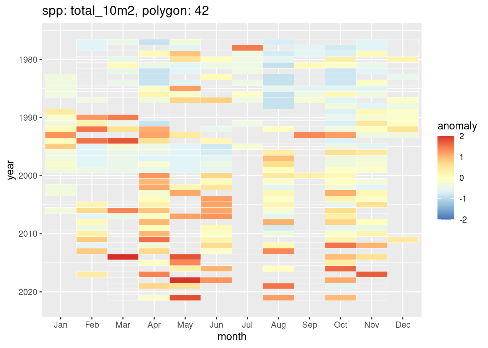

Code
x = read_ecomon_spp(form = 'sf', post = "long-extras")
y = read_hexgrid()
coast = read_coast()Here we look a changes over time for individual species as well as for the aggregate. We bin abundance into a hexagonal mesh covering the area, compute long term means and the examine trends over time relative to each long-term mean.
x = read_ecomon_spp(form = 'sf', post = "long-extras")
y = read_hexgrid()
coast = read_coast()Here’s a plot of the hexagonal grid, enumerated from lower left to upper right.
plot(sf::st_geometry(x), pch = ".", axes = TRUE, reset = FALSE, main = "All records")
plot(sf::st_geometry(y), border = "gray", add = TRUE)
text(y, labels = y$id, cex = 0.7, col = "pink")
plot(coast, col = "orange", add = TRUE)
Here we compute a summary of abundance with multiple summary metrics including count (n), minimum, 25th quantile, median (50th quantile), mean, standard deviation, 75th quantile, maximum and sum.
Total of abundance from to - over 62 polygons for 5 species plus the total (so a total of 6 groups or species). This produces a wide table with 372 records (62 polygons x 6 species).
summa_ltm = compute_summary(x, y, by = "longterm") |>
glimpse()Rows: 372
Columns: 12
$ name <chr> "coel_10m2", "coel_10m2", "coel_10m2", "coel_10m2", "coel_10m2"…
$ n <dbl> 0, 208, 10, 217, 915, 20, 675, 843, 22, 403, 918, 557, 797, 0, …
$ min <dbl> NA, 0, 0, 0, 0, 0, 0, 0, 0, 0, 0, 0, 0, NA, 0, 0, 0, 0, 0, 0, 0…
$ q25 <dbl> NA, 0, 0, 0, 0, 0, 0, 0, 0, 0, 0, 0, 0, NA, 0, 0, 0, 0, 0, 0, 0…
$ median <dbl> NA, 0.000000, 0.000000, 0.000000, 0.000000, 0.000000, 0.000000,…
$ mean <dbl> NaN, 2.194876, 1.988862, 2.319131, 2.048842, 1.896784, 2.034416…
$ sdev <dbl> NA, 3.675159, 4.208387, 3.475980, 3.530252, 3.441275, 3.482367,…
$ q75 <dbl> NA, 5.909072, 0.000000, 6.208972, 5.029608, 2.888191, 5.771074,…
$ max <dbl> NA, 12.905754, 10.709739, 10.107543, 12.046507, 9.362266, 11.80…
$ sum <dbl> 0.00000, 456.53427, 19.88862, 503.25133, 1874.69043, 37.93569, …
$ id <int> 1, 2, 3, 4, 5, 6, 7, 8, 9, 10, 11, 12, 13, 14, 15, 16, 17, 18, …
$ geom <POLYGON [°]> POLYGON ((-75.97 33.88935, ..., POLYGON ((-75.97 35.621…With a little jiggle we can produce a map showing the total abundance per polygon.
s = summa_ltm |>
longer_summary() |>
filter(sname == "sum") |>
pivot_wider(names_from = "name", values_from = "value") |>
select(-sname)
nbreaks = 10
plot(s,
nbreaks = nbreaks,
pal = RColorBrewer::brewer.pal(nbreaks-1, "Greens"))
summa_decade = compute_summary(x, y, by = "decade") |>
glimpse()Rows: 2,232
Columns: 13
$ name <chr> "coel_10m2", "coel_10m2", "coel_10m2", "coel_10m2", "coel_10m2"…
$ decade <dbl> 1970, 1970, 1970, 1970, 1970, 1970, 1970, 1970, 1970, 1970, 197…
$ n <dbl> 0, 21, 0, 19, 72, 0, 47, 65, 0, 22, 75, 37, 56, 0, 46, 60, 72, …
$ min <dbl> NA, 0, NA, 0, 0, NA, 0, 0, NA, 0, 0, 0, 0, NA, 0, 0, 0, 0, 0, 0…
$ q25 <dbl> NA, 0, NA, 0, 0, NA, 0, 0, NA, 0, 0, 0, 0, NA, 0, 0, 0, 0, 0, 0…
$ median <dbl> NA, 0, NA, 0, 0, NA, 0, 0, NA, 0, 0, 0, 0, NA, 0, 0, 0, 0, 0, 0…
$ mean <dbl> NA, 0.0000000, NA, 0.0000000, 0.1655208, NA, 0.0000000, 0.73532…
$ sdev <dbl> NA, 0.0000000, NA, 0.0000000, 0.9951583, NA, 0.0000000, 2.35874…
$ q75 <dbl> NA, 0, NA, 0, 0, NA, 0, 0, NA, 0, 0, 0, 0, NA, 0, 0, 0, 0, 0, 0…
$ max <dbl> NA, 0.000000, NA, 0.000000, 6.756665, NA, 0.000000, 9.724080, N…
$ sum <dbl> NA, 0.000000, NA, 0.000000, 11.917500, NA, 0.000000, 47.795944,…
$ id <int> 1, 2, 3, 4, 5, 6, 7, 8, 9, 10, 11, 12, 13, 14, 15, 16, 17, 18, …
$ geom <POLYGON [°]> POLYGON ((-75.97 33.88935, ..., POLYGON ((-75.97 35.621…We can plot a few stats for one or more polygons.
plot_summary_by_poly(summa_decade, ids = c(38, 42))
We do this for each species each month (62 polygons x 6 species * 12 months = 4464 records). It is this table that provides the mean and standard deviation for computing standardized anomalies by polygon and month.
summa_mon = compute_summary(x, y, by = "month") |>
glimpse()Rows: 4,464
Columns: 13
$ name <chr> "coel_10m2", "coel_10m2", "coel_10m2", "coel_10m2", "coel_10m2"…
$ month <fct> Jan, Jan, Jan, Jan, Jan, Jan, Jan, Jan, Jan, Jan, Jan, Jan, Jan…
$ n <dbl> 0, 6, 0, 6, 21, 0, 15, 18, 0, 9, 22, 17, 23, 0, 27, 29, 30, 1, …
$ min <dbl> NA, 0, NA, 0, 0, NA, 0, 0, NA, 0, 0, 0, 0, NA, 0, 0, 0, 0, 0, 0…
$ q25 <dbl> NA, 0, NA, 0, 0, NA, 0, 0, NA, 0, 0, 0, 0, NA, 0, 0, 0, 0, 0, 0…
$ median <dbl> NA, 0.000000, NA, 0.000000, 0.000000, NA, 0.000000, 0.000000, N…
$ mean <dbl> NA, 0.00000000, NA, 0.83037264, 0.07986174, NA, 1.47821691, 0.2…
$ sdev <dbl> NA, 0.0000000, NA, 2.0339893, 0.3659725, NA, 2.5389477, 1.18570…
$ q75 <dbl> NA, 0.000000, NA, 0.000000, 0.000000, NA, 2.660333, 0.000000, N…
$ max <dbl> NA, 0.000000, NA, 4.982236, 1.677097, NA, 5.752954, 5.030503, N…
$ sum <dbl> NA, 0.000000, NA, 4.982236, 1.677097, NA, 22.173254, 5.030503, …
$ id <int> 1, 2, 3, 4, 5, 6, 7, 8, 9, 10, 11, 12, 13, 14, 15, 16, 17, 18, …
$ geom <POLYGON [°]> POLYGON ((-75.97 33.88935, ..., POLYGON ((-75.97 35.621…plot_summary_by_poly(summa_mon, ids = 42)
We compute for each species (and the total) the monthly standardize anomaly relative to the long term mean. The anomaly is computed for each time step in each cell as the departure from the long term mean (from above) divided by the standard deviation of the long term mean (also from above). The anomaly time step can be year or decade for each month.
Here we look at decadal abundance departures from the long term mean.
anom_decade = compute_anomaly(x, y, summa = summa_decade, by = "decade")Plot a grid of monthly spatial anomalies by decade for just the “total_10m2” species. You have to squint!
spp = "total_10m2"
ggplot(anom_decade |> filter(name == spp)) +
geom_sf(color = "white", aes(fill = anomaly)) +
geom_sf(data = coast) +
scale_fill_distiller(palette = "Spectral", na.value = NA, type = "div") +
facet_grid(decade ~ month) +
theme(axis.text = element_blank())
We can also plot one polygon as a heat map.
plot_anomaly_by_poly(anom_decade, ids = 42)
anom_mon = monthly_anomaly(x, y, summa = summa_mon)And plot a heatmap.
heatmap_monthly_anomaly_by_poly(anom_mon, spp = "total_10m2", id = 42)